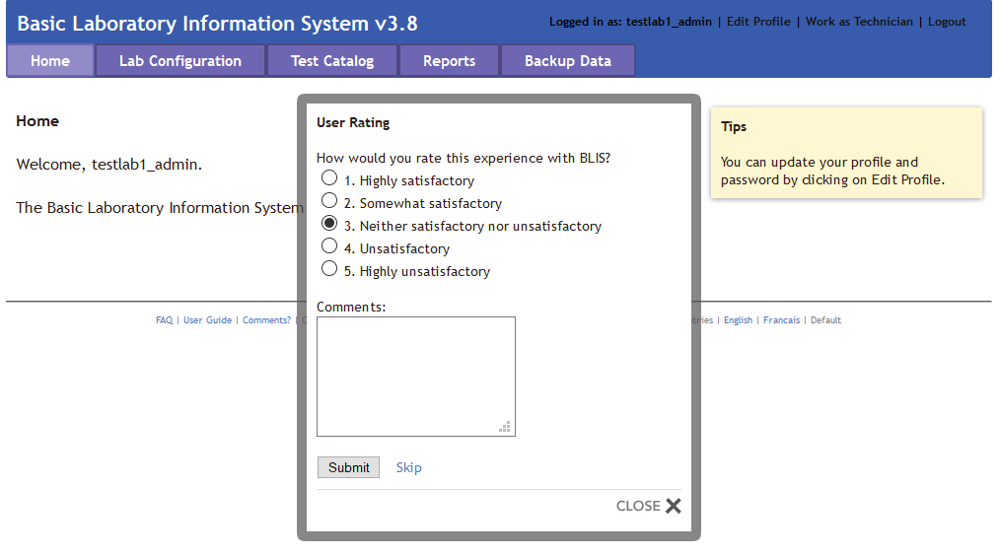

Getting Started¶
There are three versions of BLIS that currently exist.
Firstly, BLIS on Windows was the original version developed for end-users. Stand-alone versions, updates, and packaged content are still publicly available on the C4G BLIS home page, accessible here.
Secondly, BLIS on the Cloud is a newly deployed version of BLIS that is capable of running on a Cloud Provider, and was originally intended to be used as an online backup database for aggregating country-wide data for analysis.
Installation Instructions for BLIS on the Cloud
For instructions on installing BLIS on the Cloud, please see the article on Running BLIS on a Cloud Provider.
Thirdly, BLIS in a Devcontainer is an instantiation of BLIS that allows for developers to specify the development environment, and is intended to be used by developers only.
Installation Instructions for BLIS in a Devcontainer
For instructions on installing BLIS in a Devcontainer, please see the Developer Documentation.
BLIS For Windows¶
BLIS was originally developed to run on Windows using a discontinued project called Server2Go. This packages Apache2, MySQL, PHP, and Firefox together into a package that can be run all at once on a desktop computer. BLIS on Windows is the primary way that end-users are using BLIS, but can and should be used by developers to test updates.
Original BLIS Windows Setup Instructions
These instructions are carried over from a previous version of the user guide. If you are setting up BLIS for the first time, you should ignore these.
If using a server and router, plug in the router first.
- Set up and turn on the server PC and its monitor.
- Navigate to the BLIS home page and select Download
- Save the files to a hard drive.
- Open the BLIS folder on the desktop and double click on BLIS.exe. Wait for a dialog box to appear on the screen. Choose Yes from the two options. The application will be installed automatically and the full login screen will appear.
- This completes installation for a single computer. For networked computers, we recommend setting a static IP address for the network.
- Ensure that the computer is on the network.
- Copy the file BlisSetup.html to the computer
- Double click BlisSetup.html to install BLIS on the networked computer.
- Wait for the login screen. If the full screen with username, password, and login does not appear, check the URL on the server and make sure they are the same.
Instructions for Installation¶
- Navigate to the C4G BLIS home page.
- Click on the Download tab in the top menu bar, then click Download BLIS v3.8 Complete.
- Follow all instructions on the Download page.
Starting BLIS¶
- Double-click on the BLIS.exe file.
- A page requesting login information will appear. Enter in the user's login credentials.

Stopping BLIS¶
- After the session is complete, click the Logout button in the top right pane of the screen.
- A popup window will appear where the user can rate their experience with C4G BLIS and write any comments they may have. After entering any feedback, press the Submit button to fully logout. Alternatively, press Skip to logout immediately without providing any feedback. Press CLOSE to cease logging out.

Overview of Roles in BLIS¶
There are three roles in BLIS.
Firstly, Directors (also referenced to as country directors) are a role held by a single individual at the management level of each country. The roles of Directors are to oversee many laboratories using BLIS, summarize data trends from uploaded patient data from across the country, and work with C4G developers to provide user feedback for future versions of BLIS.
Secondly, Managers (also referenced as admin users) are the managerial supervisors of laboratories. The roles of Managers are to maintain the user permissions to individual labs and alter individual lab configurations as needed.
Thirdly, Technicians are the majority of BLIS users. The role of Technicians is to enter in and verify patient data.